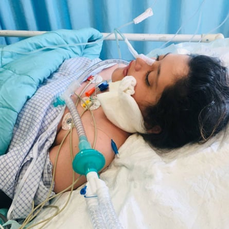

A 22-year-old woman has died in an Iranian hospital days after being detained by the regime’s morality police for allegedly not complying with the country’s hijab regulations.
Mahsa Amini was travelling with her family from Iran’s western province of Kurdistan to the capital, Tehran, to visit relatives when she was reportedly arrested for failing to meet the country’s strict rules on women’s dress.
Witnesses reported that Amini was beaten in the police van , an allegation the police deny.
The news comes weeks after Iran’s hardline president, Ebrahim Raisi, ordered a crackdown on women’s rights and called for stricter enforcement of the country’s mandatory dress code, which has required all women to wear the hijab head-covering since the 1979 Islamic revolution .
Amini’s family were notified that she had been taken to hospital hours after her arrest. She was transferred to an intensive-care unit at Kasra hospital.
According to Hrana , an Iranian human rights organisation, Amini’s family were told during her arrest that she would be released after a “re-education session”.
Mahsa Amini in a coma before she died. Her family were told during her arrest that she would be released after a ‘re-education session’.Photograph: Twitter
The police later said that Amini had suffered a heart attack. Amini’s family disputed this, however, and said she was healthy and had not been experiencing any health problems.
Amini was in a coma after arriving at the hospital, her family said, adding that they were told by hospital staff that she was brain dead.
Photographs of Amini lying in the hospital bed in a coma with bandages around her head and breathing tubes have circulated on social media.
Her hospitalisation and death drew condemnation from Iranian celebrities and politicians. Mahmoud Sadeghi , a reformist politician and former MP, called on the supreme leader, Ayatollah Ali Khamenei, to speak out over Amini’s case. “What does the supreme leader, who rightfully denounced US police over the death of George Floyd, say about the Iranian police’s treatment of Mahsa Amini?” Sadeghi tweeted on Friday.
The interior ministry and Tehran’s prosecutor launched inquiries into the case after an order from Raisi, state media reported. Raisi signed a decree on 15 August clamping down on women’s dress and stipulating harsher punishments for violating the strict code, both in public and online.
Women have been arrested across the country after the national “hijab and chastity day” declared on 12 July. One of the women was Sepideh Rashno , a writer and artist who was reportedly beaten and tortured in custody before making a forced apology on television.
Human rights groups have reported that extra security forces have been deployed outside Kasra hospital.